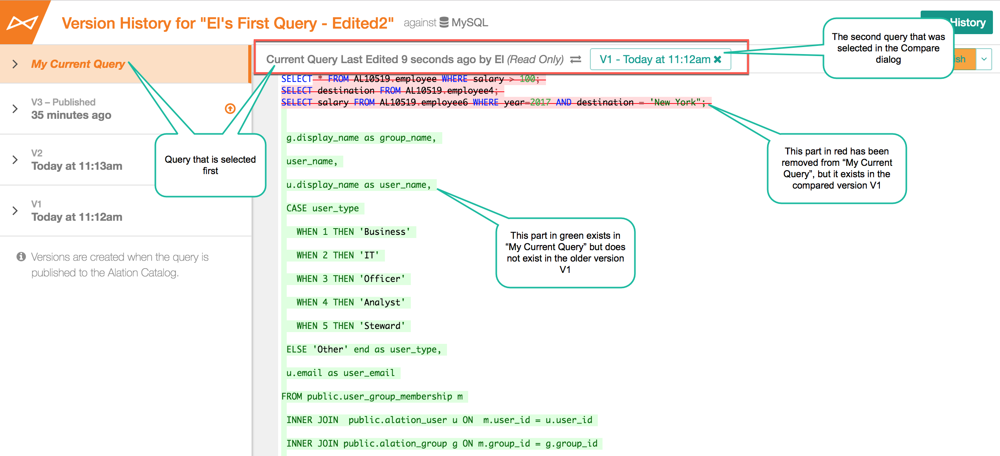

Comparing Versions in Query Version History¶
Alation Cloud Service Applies to Alation Cloud Service instances of Alation
Customer Managed Applies to customer-managed instances of Alation
Available from Version V R5 (5.9.x)
In Query Version History in Compose, you can compare major versions. A major version is a query version that was published.
Comparing Query Versions¶
To compare versions,
In Compose, open Version History for a query by clicking More… on the upper right then clicking Version History.
The list of versions on the left will have the current query version selected. Select a different version if you want. The query version you select will be one for the versions for comparison.
On the top toolbar, click Compare. The Compare Versions dialog will open.
From the list of versions, select the second version you want to compare. The name of the version you have selected previously will be disabled.
In the dialog, click Compare. The diff view of the two versions will open, and the differences will be highlighted with color.
{kind=link}
Diff View¶
The diff view always shows what is added or removed since the time of the oldest of the selected versions, so it does not matter in which order you select the versions for comparison.
The top toolbar of the diff view area will tell you which versions are being compared. New additions are highlighted in green. Deleted parts are highlighted in red and crossed out.
Which Versions are Compared?
